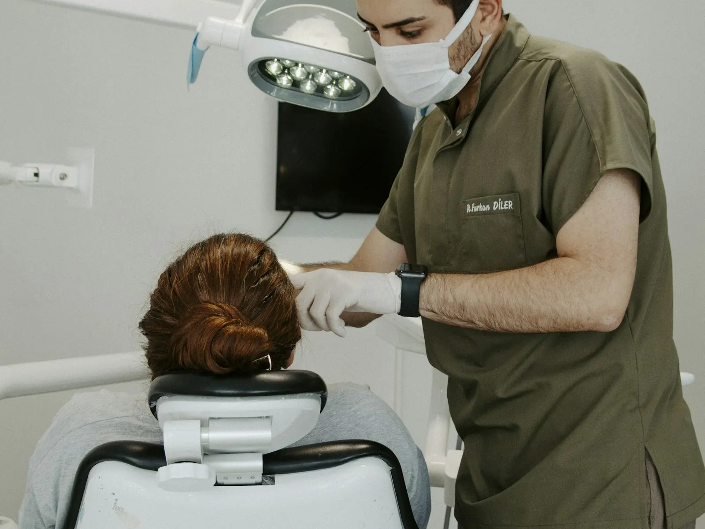
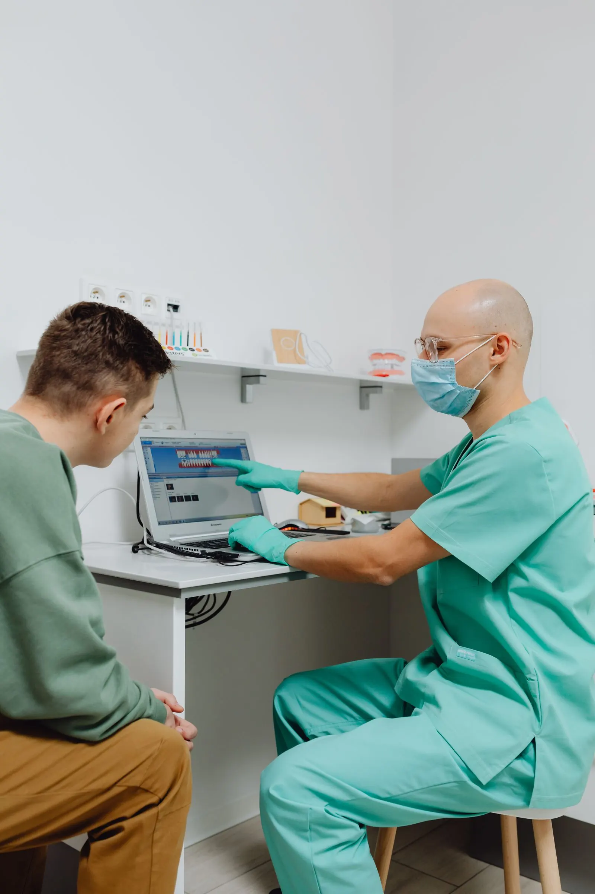
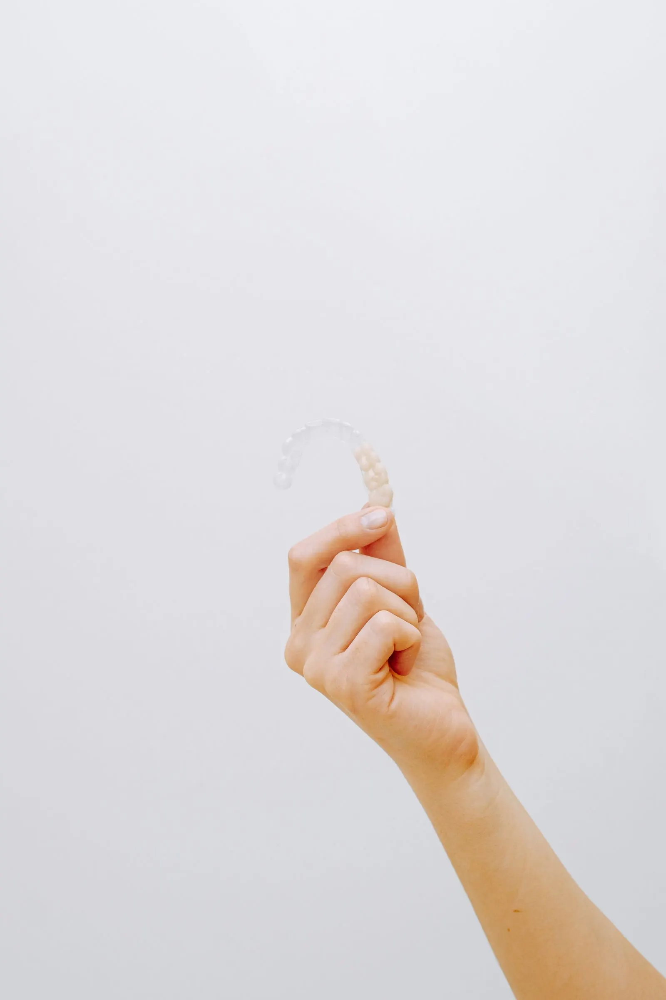

Diskret im Alltag
Die transparenten Schienen sind bei normalem Gesprächsabstand meist wenig auffällig. Attachments oder andere Hilfsmittel können je nach Planung trotzdem sichtbar sein.
Invisalign Steglitz
Transparente Aligner, persönlich geplant und zahnärztlich begleitet – für Erwachsene, die ihre Zähne diskret korrigieren lassen möchten.
Die Eignung wird immer nach persönlicher Untersuchung entschieden.
Kurz erklärt
Invisalign ist ein System aus transparenten, herausnehmbaren Alignern. Eine Folge individuell geplanter Schienen bewegt die Zähne schrittweise in die vorgesehene Position. Ob diese Behandlung für Ihren Befund geeignet ist, wird nach Untersuchung, Diagnostik und persönlicher Beratung entschieden.

Für wen geeignet?
Aligner können bei verschiedenen Zahnfehlstellungen infrage kommen. Entscheidend sind der konkrete Befund, die Gesundheit von Zähnen und Zahnfleisch sowie die Frage, ob die geplanten Zahnbewegungen mit diesem Verfahren sinnvoll erreichbar sind.
Wichtig: Die Entscheidung für Invisalign darf nicht nur anhand von Fotos oder eines Online-Fragebogens getroffen werden. Eine persönliche zahnärztliche Untersuchung ist Teil einer sicheren Planung.
Warum Aligner?
Viele Erwachsene wünschen sich eine unauffällige Behandlung und zugleich persönliche Begleitung. Invisalign verbindet beides mit einem digital geplanten, schrittweisen Vorgehen.
Die transparenten Schienen sind bei normalem Gesprächsabstand meist wenig auffällig. Attachments oder andere Hilfsmittel können je nach Planung trotzdem sichtbar sein.
Zum Essen, Trinken bestimmter Getränke und zur Zahnpflege werden die Aligner herausgenommen. Danach kommen sie gereinigt wieder zurück auf die Zähne.
Auf Basis der Diagnostik wird die geplante Zahnbewegung digital dargestellt. So lassen sich Behandlungsschritte und Ziele vor dem Start verständlich besprechen.
Regelmäßige Termine helfen, den Sitz der Schienen, den Verlauf und die Mundgesundheit im Blick zu behalten. Bei Bedarf wird der Plan angepasst.
Ihr Behandlungsweg
Eine sorgfältige Aligner-Behandlung endet nicht mit der letzten aktiven Schiene. Diagnostik, Mitarbeit, Kontrollen und Retention gehören zusammen.
Wir sprechen über Ihre Wünsche, untersuchen Zähne, Zahnfleisch und Biss und klären, ob eine Aligner-Therapie grundsätzlich sinnvoll erscheint.
Ein digitaler Scan erfasst Ihre Zahnreihen. Je nach Befund können Fotos, Röntgenaufnahmen oder weitere diagnostische Schritte notwendig sein.
Das Behandlungsziel, die geplanten Bewegungen, mögliche Attachments, Dauer, Kontrollen und Kosten werden nachvollziehbar besprochen.
Sie tragen die Schienen entsprechend der persönlichen Empfehlung und wechseln sie nach Plan. Kontrolltermine begleiten den Fortschritt.
Nach der aktiven Behandlung stabilisiert ein Retainer die neue Zahnposition. Art, Tragedauer und Kontrollen werden individuell festgelegt.

Ihr Plan wird gemeinsam besprochen: Digitale Darstellungen helfen, vorgesehene Schritte verständlich zu erklären. Wenn eine Schiene nicht richtig sitzt oder Beschwerden auftreten, wenden Sie sich an die Praxis.
Termin anfragenInvisalign im Alltag
Transparente Schienen sind flexibel, brauchen aber eine verlässliche Routine. Die genaue Tragezeit und der Wechselrhythmus richten sich nach Ihrem persönlichen Plan.

Nehmen Sie die Aligner zum Essen heraus. Bei Getränken außer Wasser kann das Herausnehmen ebenfalls sinnvoll sein. Reinigen Sie Zähne und Schienen vor dem Wiedereinsetzen entsprechend der Empfehlung Ihrer Praxis.
Spülen und reinigen Sie die Aligner regelmäßig mit lauwarmem Wasser und geeigneten Hilfsmitteln. Sehr heißes Wasser kann das Material verformen. Ihre Zahnpflege bleibt während der Behandlung besonders wichtig.
In den ersten Tagen kann sich das Sprechen ungewohnt anfühlen. Viele Menschen gewöhnen sich rasch daran. Druck beim Start eines neuen Aligners kann vorkommen; stärkere oder anhaltende Beschwerden gehören abgeklärt.
Eine feste Routine hilft: Aufbewahrungsbox, kleine Zahnbürste und Reinigungsmöglichkeit gehören in die Tasche. Bewahren Sie Schienen nie lose in Servietten auf – dort werden sie leicht vergessen oder entsorgt.
Behandlung vergleichen
Beide Verfahren bewegen Zähne. Welche Lösung besser zu Ihnen passt, hängt von Befund, Ziel, Alltag und der notwendigen Kontrolle ab.
| Kriterium | Transparente Aligner | Feste Zahnspange |
|---|---|---|
| Sichtbarkeit | Transparent und meist unauffällig; Attachments können sichtbar sein. | Brackets und Bögen sind je nach Material deutlicher sichtbar. |
| Herausnehmen | Zum Essen und zur Zahnpflege herausnehmbar. | Bleibt während der aktiven Behandlung fest auf den Zähnen. |
| Mitarbeit | Konsequente tägliche Tragezeit ist entscheidend. | Die Apparatur wirkt dauerhaft; Pflege und Termine bleiben wichtig. |
| Zahnpflege | Zähne lassen sich ohne eingesetzte Schiene wie gewohnt putzen. | Reinigung um Brackets und Bögen erfordert besondere Sorgfalt. |
| Eignung | Für viele, aber nicht alle Zahn- und Bissfehlstellungen geeignet. | Kann bei komplexeren Bewegungen je nach Befund Vorteile haben. |
| Kontrollen | Regelmäßige Kontrollen prüfen Sitz, Verlauf und Mundgesundheit. | Regelmäßige Kontrollen und Anpassungen gehören ebenfalls dazu. |
| Nach Behandlung | Retention hilft, die erreichte Position zu stabilisieren. | Auch hier ist Retention nach der aktiven Behandlung notwendig. |
Die Tabelle dient der Orientierung. Eine persönliche Empfehlung ist erst nach Diagnostik möglich.
Kosten und Planung
Eine pauschale Preisangabe wäre ohne Befund nicht belastbar. Die Kosten richten sich unter anderem nach der Komplexität der Zahnbewegungen, der Zahl der benötigten Aligner, möglichen Zusatzmaßnahmen, Kontrollen und Retention.
Lumera Dental Atelier
Bei Lumera begleitet Sie ein festes Praxisteam vom ersten Gespräch über die digitale Planung bis zur Retention. Wir erklären Entscheidungen verständlich, prüfen den Verlauf persönlich und setzen Behandlungsschritte erst um, wenn Ziel, Nutzen, Grenzen und Kosten gemeinsam geklärt sind.
Beratung
Bringen Sie Ihre Erwartungen, frühere Behandlungen und vorhandene Unterlagen mit. Ein guter Plan beginnt mit einem vollständigen Bild Ihrer Situation.
Sicherheit
Diagnose, Aufklärung und Therapieplanung gehören in zahnärztliche Hände. Persönliche Untersuchung und Kontrollen sind fester Teil unseres Ablaufs.
Häufige Fragen
Kurze Antworten zur ersten Orientierung. Ihre persönliche Situation klären wir im Beratungstermin.
Die Kosten hängen vom Umfang der Zahnbewegungen, der Zahl der benötigten Schienen, möglichen Zusatzmaßnahmen und der Behandlungsdauer ab. Eine belastbare Summe ist erst nach Untersuchung und digitaler Planung möglich. Vor dem Start erhalten Sie einen persönlichen Behandlungs- und Kostenplan.
Die Dauer ist individuell. Sie richtet sich nach Ausgangssituation, Behandlungsziel, geplanter Zahnbewegung und konsequenter Tragezeit. Nach der Diagnostik besprechen wir einen persönlichen Zeitplan. Nachkorrekturen können die Gesamtdauer verlängern.
Aligner werden in der Regel den größten Teil des Tages getragen und zum Essen sowie zur Zahnpflege herausgenommen. Häufig werden rund 20 bis 22 Stunden empfohlen. Maßgeblich ist die persönliche Anweisung Ihrer behandelnden Praxis.
Nein. Ob eine Aligner-Behandlung geeignet ist, lässt sich erst nach persönlicher Untersuchung und Diagnostik entscheiden. Je nach Art und Ausprägung der Fehlstellung kann eine andere kieferorthopädische Behandlung oder eine Kombination sinnvoller sein.
Zum Essen werden die Aligner normalerweise herausgenommen. Bei Getränken außer Wasser kann das ebenfalls sinnvoll sein. Vor dem Wiedereinsetzen sollten Zähne und Schienen entsprechend der Praxisempfehlung gereinigt werden.
Reinigen Sie die Schienen regelmäßig mit lauwarmem Wasser und geeigneten Hilfsmitteln. Sehr heißes Wasser kann das Material verformen. Welche Produkte Sie verwenden sollten, erklärt Ihnen das Praxisteam passend zu Ihren Alignern.
Nach der aktiven Zahnbewegung folgt die Retention. Ein individuell geplanter festsitzender oder herausnehmbarer Retainer hilft, die erreichte Zahnposition zu stabilisieren. Art, Tragedauer und Kontrollen werden persönlich festgelegt.
Die Erstattung hängt von Versicherungsart, Tarif und medizinischer Situation ab. Gesetzliche Krankenkassen übernehmen Aligner-Behandlungen bei Erwachsenen häufig nicht als reguläre Leistung. Reichen Sie den schriftlichen Behandlungs- und Kostenplan vor Beginn bei Ihrer Versicherung ein und lassen Sie die Erstattung direkt bestätigen.
Ihr nächster Schritt
Im ersten Termin sprechen wir über Ihr Ziel, untersuchen Ihre Zahn- und Bisssituation und erklären die nächsten diagnostischen Schritte. Sie erhalten eine ehrliche Einschätzung, bevor Sie sich für eine Behandlung entscheiden.
Diese Informationen dienen der allgemeinen Orientierung und ersetzen keine persönliche Untersuchung, Diagnose oder Aufklärung. Eignung, Risiken, Dauer, Kosten und Alternativen werden individuell geklärt.